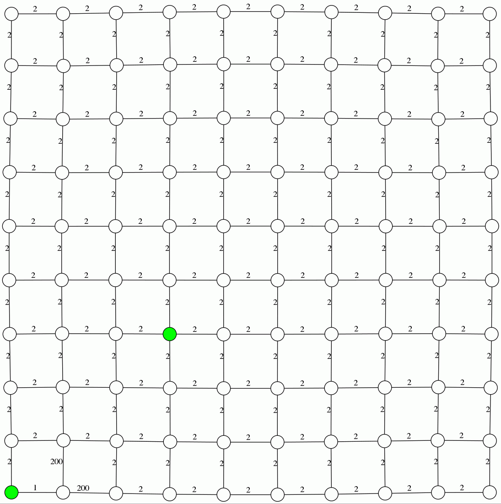
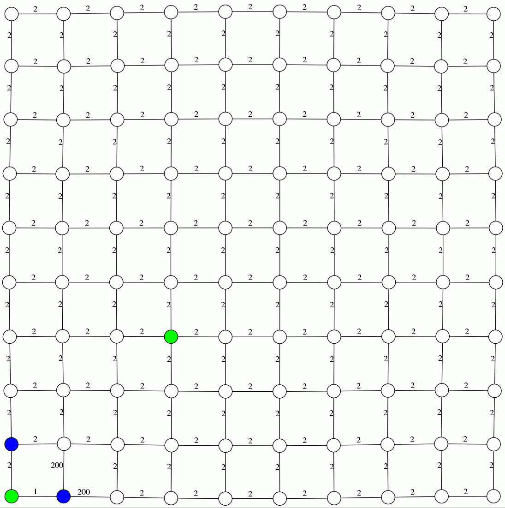

A* search

Explanation: In each iteration, it finds the currently seen but untraversed vertex that minimizes, f(n) + h(n)
where f(n) and h(n) give the distance of n from source vertex and estimated distance of n to terminal vertex
Djikstra

Explanation: In each iteration, it finds the currently seen but untraversed vertex that minimizes, f(n)
where f(n) gives the distance of n from source vertex
Greedy BFS
Explanation: In each iteration, it finds the currently seen but untraversed vertex that minimizes, h(n)
where h(n) gives the estimated distance of n to terminal vertex
Intuitive Proof of Correctness of A*:
The A* search algorithm involves finding the optimal path between two vertices, s and t. It takes a heuristic function,
h(vi) that provides an estimate of the distance between vi and t and which satisfies the following property:
i. Never overestimates the cost:
h(vi) < d(vi ,t)
where d(i,j) gives the smallest distance between i and j.
ii. Is monotonic:
h(vi) < h(vj) => d(vi,t) < d(vj,t)
If the heuristic satisfies these properties, it is said to be admissible and A* will give a correct optimal solution.
The A* algorithm selects a vertex, n with minimum f(n) + h(n), where f(n) is the currently known distance of n from s, to
expand a path in each iteration. This is an optimistic choice as the f(n) + h(n) gives a lower bound on the length of the
current path to t.
This continues until the algorithm selects n = t, in which case it terminates and we have an optimal path
whose length is given by f(t) which would have been computed by this stage. Note that this path has to be optimal since,
all the other paths had larger optimistic estimates f(v)+h(v) and would consequently have possibly even larger actual
distances as h is monotonic.
If the vertex t is not reachable from s, the algorithm will simply terminate without finding an optimal path as it runs
out of vertices to expand from.
Note: For our implementation, we have used the Manhattan distance ( = |x2-x1| + |y2-y1| ) between two points as the
heuristic and our graph is of the form of a grid where each vertex represents a x,y coordinate.